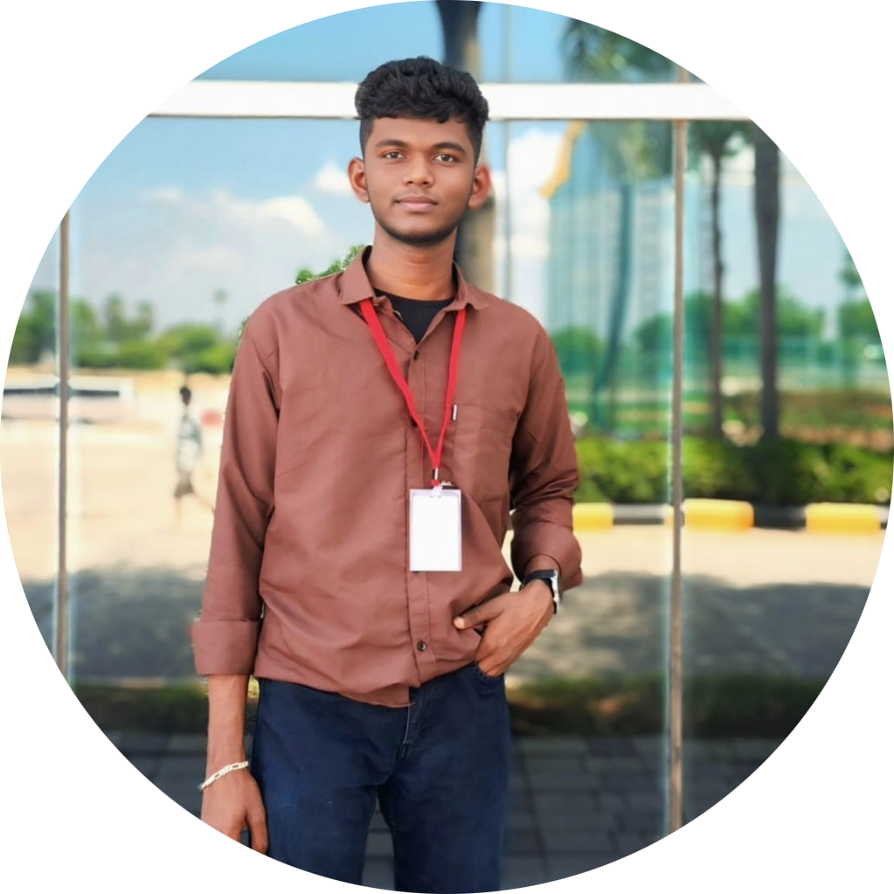

I am Mayandi Raja, a dedicated and passionate Computer Technology student pursuing a B.Sc. degree at Bharathidasan College of Arts and Science, Tiruppur. I have a strong interest in software development, web technologies, and UI/UX design. I possess knowledge of programming languages such as C, Java, and JavaScript, along with frontend and backend technologies including HTML, CSS, React.js, Node.js, and MongoDB. I enjoy exploring emerging technologies, developing innovative projects, and enhancing my problem-solving abilities. I am committed to continuous learning and aim to build a successful career in the IT industry by creating efficient, user-friendly, and impactful digital solutions.
I am Quick learner.I want to become place an top MNC companies like Microsoft,Google
| Class | School Name |
|---|---|
| I to XII | Deepa Matric Higher Secondary School |
| College | Bharathidasan College of Arts and Science |
My journey as a Computer Technology student, exploring programming, web development and emerging technologies.
To become a successful software developer and create innovative digital solutions that make a positive impact.
Participated in the 1M1B Green Internship – Batch 7, working on an Eco Bricks project for plastic waste management.
Interested in web development, UI/UX design, artificial intelligence and exploring new technologies.
Beyond technology, I enjoy drawing, playing Kabaddi, listening to music and exploring creative activities.
My passion for learning, curiosity about technology and determination to achieve my goals motivate me every day.
I believe in learning by doing, embracing challenges, learning from mistakes and improving myself every day.